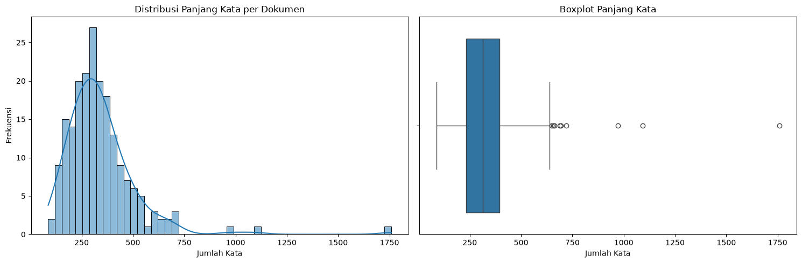
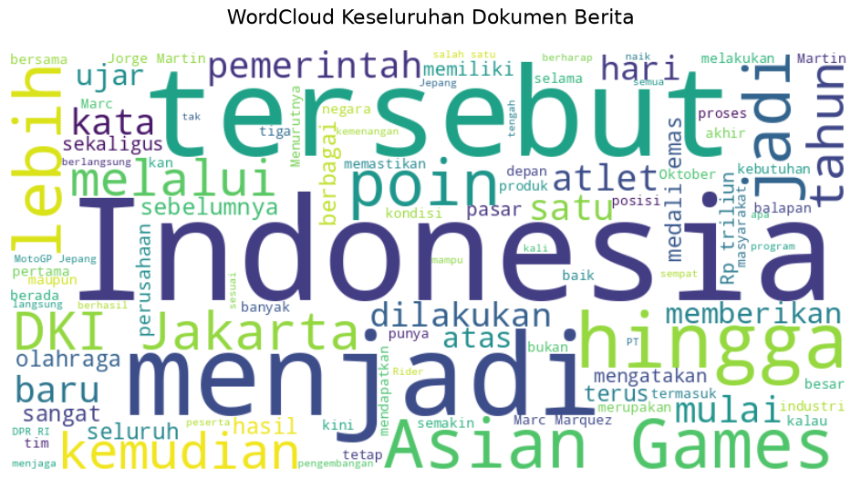
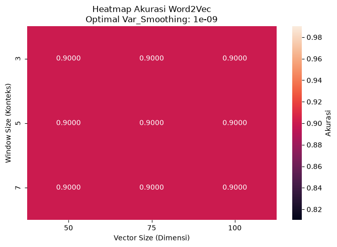
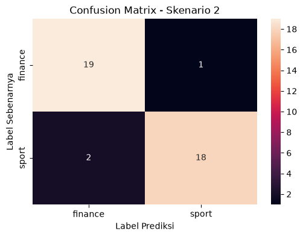
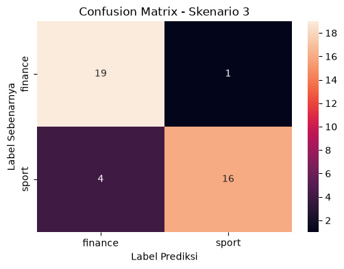
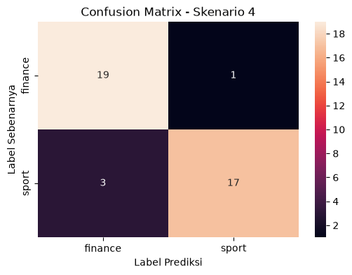
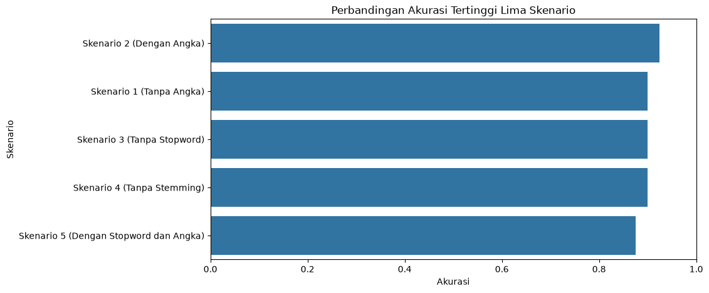

Tugas 3 — Penerapan Word2Vec pada Data Teks Bahasa Indonesia#
Pencarian dan Penambangan Website#
Notebook ini membahas penerapan Word2Vec dengan arsitektur Skip-gram pada data berita hasil scraping dari website Detik.
Tahapan yang dilakukan meliputi:
Memahami konsep Word2Vec, Skip-gram, dan CBOW.
Membentuk contoh pasangan kata target dan konteks.
Memuat dan memahami dataset berita hasil scraping.
Melakukan preprocessing teks dengan beberapa konfigurasi.
Membentuk embedding menggunakan Word2Vec Skip-gram.
Mengubah representasi kata menjadi representasi dokumen menggunakan mean pooling.
Melakukan hyperparameter tuning Word2Vec dan Gaussian Naive Bayes.
Membandingkan lima skenario preprocessing.
Melakukan pemodelan dan evaluasi menggunakan Gaussian Naive Bayes.
Menampilkan representasi vektor dokumen.
Menyimpan model Word2Vec dan model klasifikasi untuk digunakan kembali.
1. Perbandingan Arsitektur Word2Vec: Skip-gram dan CBOW#
Word2Vec merupakan metode untuk mempelajari representasi kata dalam bentuk vektor numerik berdasarkan pola konteks kata di dalam korpus.
Dua arsitektur utama Word2Vec adalah:
Skip-gram: menggunakan satu kata target untuk memprediksi kata-kata konteks di sekitarnya.
CBOW (Continuous Bag of Words): menggunakan kata-kata konteks untuk memprediksi satu kata target.
Pada tugas ini digunakan arsitektur Skip-gram dengan parameter
sg=1.
import sys
import gensim
print("Python :", sys.version)
print("Gensim :", gensim.__version__)
Python : 3.12.3 (main, Aug 31 2026, 10:18:26) [GCC 13.3.0]
Gensim : 4.4.0
from gensim.models import Word2Vec
print("Word2Vec berhasil diimpor.")
Word2Vec berhasil diimpor.
2. Contoh Data Kalimat#
Sebelum diterapkan pada dataset berita, Word2Vec diuji menggunakan contoh kalimat sederhana yang telah ditokenisasi.
Setiap kalimat direpresentasikan sebagai list kata sehingga batas antar kalimat tetap diketahui oleh model.
kalimat = [
["pemerintah", "menaikkan", "harga", "saham", "pasar", "keuangan"],
["investor", "membeli", "saham", "perusahaan", "teknologi", "pasar"],
["atlet", "meraih", "medali", "emas", "dalam", "kompetisi", "olahraga"]
]
n_vector = 10
window_size = 5
3. Melatih Word2Vec Skip-gram#
Parameter yang digunakan:
vector_size=10untuk menentukan jumlah dimensi vektor.window=5untuk menentukan ukuran konteks.sg=1untuk memilih arsitektur Skip-gram.min_count=1agar seluruh kata pada contoh dapat masuk vocabulary.seed=42agar proses lebih mudah direproduksi.
model_skipgram = Word2Vec(
sentences=kalimat,
vector_size=n_vector,
window=window_size,
sg=1,
min_count=1,
workers=1,
seed=42
)
print("Model Word2Vec Skip-gram berhasil dilatih.")
Model Word2Vec Skip-gram berhasil dilatih.
4. Membentuk Pasangan Target dan Konteks#
Pada Skip-gram, sebuah kata digunakan sebagai target dan kata-kata di sekitarnya digunakan sebagai konteks.
Fungsi berikut digunakan untuk mengilustrasikan pembentukan pasangan target-konteks berdasarkan ukuran window.
def ekstrak_kombinasi_skipgram(kalimat_list, window_size):
pasangan_kombinasi = []
for kalimat in kalimat_list:
panjang_kalimat = len(kalimat)
for i, kata_target in enumerate(kalimat):
awal = max(0, i - window_size)
akhir = min(panjang_kalimat, i + window_size + 1)
for j in range(awal, akhir):
if i != j:
kata_konteks = kalimat[j]
pasangan_kombinasi.append(
(kata_target, kata_konteks)
)
return pasangan_kombinasi
semua_pasangan = ekstrak_kombinasi_skipgram(
kalimat,
window_size=window_size
)
kombinasi_unik = sorted(list(set(semua_pasangan)))
print(f"=== IDENTIFIKASI KOMBINASI KATA (window={window_size}) ===")
print(f"Total pasangan terbentuk : {len(semua_pasangan)}")
print(f"Total pasangan KATA UNIK : {len(kombinasi_unik)}\n")
print("Daftar Kombinasi Kata Unik (Target -> Konteks):")
for target, konteks in kombinasi_unik:
print(f"Target: '{target}' --> Konteks: '{konteks}'")
=== IDENTIFIKASI KOMBINASI KATA (window=5) ===
Total pasangan terbentuk : 100
Total pasangan KATA UNIK : 98
Daftar Kombinasi Kata Unik (Target -> Konteks):
Target: 'atlet' --> Konteks: 'dalam'
Target: 'atlet' --> Konteks: 'emas'
Target: 'atlet' --> Konteks: 'kompetisi'
Target: 'atlet' --> Konteks: 'medali'
Target: 'atlet' --> Konteks: 'meraih'
Target: 'dalam' --> Konteks: 'atlet'
Target: 'dalam' --> Konteks: 'emas'
Target: 'dalam' --> Konteks: 'kompetisi'
Target: 'dalam' --> Konteks: 'medali'
Target: 'dalam' --> Konteks: 'meraih'
Target: 'dalam' --> Konteks: 'olahraga'
Target: 'emas' --> Konteks: 'atlet'
Target: 'emas' --> Konteks: 'dalam'
Target: 'emas' --> Konteks: 'kompetisi'
Target: 'emas' --> Konteks: 'medali'
Target: 'emas' --> Konteks: 'meraih'
Target: 'emas' --> Konteks: 'olahraga'
Target: 'harga' --> Konteks: 'keuangan'
Target: 'harga' --> Konteks: 'menaikkan'
Target: 'harga' --> Konteks: 'pasar'
Target: 'harga' --> Konteks: 'pemerintah'
Target: 'harga' --> Konteks: 'saham'
Target: 'investor' --> Konteks: 'membeli'
Target: 'investor' --> Konteks: 'pasar'
Target: 'investor' --> Konteks: 'perusahaan'
Target: 'investor' --> Konteks: 'saham'
Target: 'investor' --> Konteks: 'teknologi'
Target: 'keuangan' --> Konteks: 'harga'
Target: 'keuangan' --> Konteks: 'menaikkan'
Target: 'keuangan' --> Konteks: 'pasar'
Target: 'keuangan' --> Konteks: 'pemerintah'
Target: 'keuangan' --> Konteks: 'saham'
Target: 'kompetisi' --> Konteks: 'atlet'
Target: 'kompetisi' --> Konteks: 'dalam'
Target: 'kompetisi' --> Konteks: 'emas'
Target: 'kompetisi' --> Konteks: 'medali'
Target: 'kompetisi' --> Konteks: 'meraih'
Target: 'kompetisi' --> Konteks: 'olahraga'
Target: 'medali' --> Konteks: 'atlet'
Target: 'medali' --> Konteks: 'dalam'
Target: 'medali' --> Konteks: 'emas'
Target: 'medali' --> Konteks: 'kompetisi'
Target: 'medali' --> Konteks: 'meraih'
Target: 'medali' --> Konteks: 'olahraga'
Target: 'membeli' --> Konteks: 'investor'
Target: 'membeli' --> Konteks: 'pasar'
Target: 'membeli' --> Konteks: 'perusahaan'
Target: 'membeli' --> Konteks: 'saham'
Target: 'membeli' --> Konteks: 'teknologi'
Target: 'menaikkan' --> Konteks: 'harga'
Target: 'menaikkan' --> Konteks: 'keuangan'
Target: 'menaikkan' --> Konteks: 'pasar'
Target: 'menaikkan' --> Konteks: 'pemerintah'
Target: 'menaikkan' --> Konteks: 'saham'
Target: 'meraih' --> Konteks: 'atlet'
Target: 'meraih' --> Konteks: 'dalam'
Target: 'meraih' --> Konteks: 'emas'
Target: 'meraih' --> Konteks: 'kompetisi'
Target: 'meraih' --> Konteks: 'medali'
Target: 'meraih' --> Konteks: 'olahraga'
Target: 'olahraga' --> Konteks: 'dalam'
Target: 'olahraga' --> Konteks: 'emas'
Target: 'olahraga' --> Konteks: 'kompetisi'
Target: 'olahraga' --> Konteks: 'medali'
Target: 'olahraga' --> Konteks: 'meraih'
Target: 'pasar' --> Konteks: 'harga'
Target: 'pasar' --> Konteks: 'investor'
Target: 'pasar' --> Konteks: 'keuangan'
Target: 'pasar' --> Konteks: 'membeli'
Target: 'pasar' --> Konteks: 'menaikkan'
Target: 'pasar' --> Konteks: 'pemerintah'
Target: 'pasar' --> Konteks: 'perusahaan'
Target: 'pasar' --> Konteks: 'saham'
Target: 'pasar' --> Konteks: 'teknologi'
Target: 'pemerintah' --> Konteks: 'harga'
Target: 'pemerintah' --> Konteks: 'keuangan'
Target: 'pemerintah' --> Konteks: 'menaikkan'
Target: 'pemerintah' --> Konteks: 'pasar'
Target: 'pemerintah' --> Konteks: 'saham'
Target: 'perusahaan' --> Konteks: 'investor'
Target: 'perusahaan' --> Konteks: 'membeli'
Target: 'perusahaan' --> Konteks: 'pasar'
Target: 'perusahaan' --> Konteks: 'saham'
Target: 'perusahaan' --> Konteks: 'teknologi'
Target: 'saham' --> Konteks: 'harga'
Target: 'saham' --> Konteks: 'investor'
Target: 'saham' --> Konteks: 'keuangan'
Target: 'saham' --> Konteks: 'membeli'
Target: 'saham' --> Konteks: 'menaikkan'
Target: 'saham' --> Konteks: 'pasar'
Target: 'saham' --> Konteks: 'pemerintah'
Target: 'saham' --> Konteks: 'perusahaan'
Target: 'saham' --> Konteks: 'teknologi'
Target: 'teknologi' --> Konteks: 'investor'
Target: 'teknologi' --> Konteks: 'membeli'
Target: 'teknologi' --> Konteks: 'pasar'
Target: 'teknologi' --> Konteks: 'perusahaan'
Target: 'teknologi' --> Konteks: 'saham'
5. Representasi Vektor Kata#
Setiap kata yang terdapat dalam vocabulary Word2Vec memiliki representasi vektor numerik.
Vektor tersebut tidak memiliki arti yang dapat dibaca per dimensi secara langsung. Makna representasi dilihat dari hubungan antar-vektor kata.
kata_uji = "saham"
vektor_kata = model_skipgram.wv[kata_uji]
print(f"=== HASIL SKIP-GRAM (n={n_vector}, window={window_size}) ===")
print(f"Ukuran dimensi vektor '{kata_uji}': {vektor_kata.shape[0]}")
print(f"Vektor angka untuk kata '{kata_uji}':\n{vektor_kata}")
=== HASIL SKIP-GRAM (n=10, window=5) ===
Ukuran dimensi vektor 'saham': 10
Vektor angka untuk kata 'saham':
[ 0.00530819 0.09512772 0.04711951 0.05224992 0.04349924 0.05722775
0.00266594 -0.07442413 0.06794856 -0.00990942]
kata_uji = "saham"
vektor_kata = model_skipgram.wv[kata_uji]
print(f"=== HASIL SKIP-GRAM (n={n_vector}, window={window_size}) ===")
print(f"Ukuran dimensi vektor '{kata_uji}': {vektor_kata.shape[0]}")
print(f"Vektor angka untuk kata '{kata_uji}':\n{vektor_kata}")
=== HASIL SKIP-GRAM (n=10, window=5) ===
Ukuran dimensi vektor 'saham': 10
Vektor angka untuk kata 'saham':
[ 0.00530819 0.09512772 0.04711951 0.05224992 0.04349924 0.05722775
0.00266594 -0.07442413 0.06794856 -0.00990942]
6. Skip-gram dan CBOW#
Pada Gensim:
sg=1digunakan untuk Skip-gram.sg=0digunakan untuk CBOW.
Perbedaan keduanya:
Aspek |
Skip-gram |
CBOW |
|---|---|---|
Input |
Satu kata target |
Kata-kata konteks |
Prediksi |
Kata-kata konteks |
Satu kata target |
Contoh |
Dari |
Dari konteks, memprediksi |
Pada tugas ini hanya Skip-gram yang digunakan sebagai eksperimen. CBOW digunakan sebagai pembanding konsep.
7. Persiapan Library#
Library yang digunakan pada tahap berikutnya meliputi:
Pandas untuk pengolahan dataset.
NumPy untuk operasi numerik.
Matplotlib dan Seaborn untuk visualisasi.
WordCloud untuk eksplorasi kata.
Sastrawi untuk stopword dan stemming bahasa Indonesia.
tqdm untuk progress bar.
Gensim untuk Word2Vec.
Scikit-learn untuk pembagian data, Gaussian Naive Bayes, dan evaluasi.
%pip install -q Sastrawi wordcloud tqdm seaborn joblib
Note: you may need to restart the kernel to use updated packages.
from gensim.models import Word2Vec
import Sastrawi
import wordcloud
import tqdm
import seaborn
import joblib
print("Semua library Tugas 3 siap.")
Semua library Tugas 3 siap.
%pip install -q scikit-learn
Note: you may need to restart the kernel to use updated packages.
import pandas as pd
import numpy as np
import re
import matplotlib.pyplot as plt
import seaborn as sns
from wordcloud import WordCloud
from Sastrawi.StopWordRemover.StopWordRemoverFactory import StopWordRemoverFactory
from Sastrawi.Stemmer.StemmerFactory import StemmerFactory
from tqdm.auto import tqdm
import logging
import joblib
from gensim.models import Word2Vec
from sklearn.model_selection import train_test_split
from sklearn.naive_bayes import GaussianNB
from sklearn.metrics import (
accuracy_score,
classification_report,
confusion_matrix
)
tqdm.pandas()
8. Data Understanding#
Dataset yang digunakan merupakan hasil scraping pada Tugas 1.
Dataset terdiri dari dua kategori berita:
Sport
Finance
Masing-masing dataset memiliki kolom kategori, URL, dan teks berita.
Kolom URL digunakan sebagai informasi sumber, tetapi tidak digunakan sebagai fitur dalam pembentukan embedding.
df_sport = pd.read_csv("data/dataset_detik_sport.csv")
df_finance = pd.read_csv("data/dataset_detik_finance.csv")
df_all_ori = pd.concat(
[df_sport, df_finance],
ignore_index=True
)
print(df_all_ori)
kategori url \
0 sport https://sport.detik.com/sport-lain/d-8695603/e...
1 sport https://sport.detik.com/moto-gp/d-8695608/moto...
2 sport https://sport.detik.com/moto-gp/d-8695361/impi...
3 sport https://sport.detik.com/moto-gp/d-8695022/veda...
4 sport https://sport.detik.com/sport-lain/d-8694792/t...
.. ... ...
195 finance https://finance.detik.com/berita-ekonomi-bisni...
196 finance https://finance.detik.com/moneter/d-8693138/ut...
197 finance https://finance.detik.com/bursa-dan-valas/d-86...
198 finance https://finance.detik.com/berita-ekonomi-bisni...
199 finance https://finance.detik.com/berita-ekonomi-bisni...
teks
0 Menpora Erick Thohir senang kontingen Indonesi...
1 Rangkaian seri balap MotoGP Jepang di Sirkuit ...
2 Jorge Martin sedang memperjuangkan titel juara...
3 Rider Indonesia Veda Ega Pratama balapan di Ma...
4 Pelatih speed tim panjat tebing, Fitriyani, me...
.. ...
195 Kepala Badan Gizi Nasional (BGN) Sudaryono men...
196 Utang pinjaman daring (pindar) masyarakat Indo...
197 Jumlah investor pasar modal Indonesia terus be...
198 Menteri Koordinator (Menko) Perekonomian Airla...
199 Meski harga kedelai yang sepenuhnya hasil impo...
[200 rows x 3 columns]
df_all = df_all_ori.drop("url", axis=1)
print(df_all)
kategori teks
0 sport Menpora Erick Thohir senang kontingen Indonesi...
1 sport Rangkaian seri balap MotoGP Jepang di Sirkuit ...
2 sport Jorge Martin sedang memperjuangkan titel juara...
3 sport Rider Indonesia Veda Ega Pratama balapan di Ma...
4 sport Pelatih speed tim panjat tebing, Fitriyani, me...
.. ... ...
195 finance Kepala Badan Gizi Nasional (BGN) Sudaryono men...
196 finance Utang pinjaman daring (pindar) masyarakat Indo...
197 finance Jumlah investor pasar modal Indonesia terus be...
198 finance Menteri Koordinator (Menko) Perekonomian Airla...
199 finance Meski harga kedelai yang sepenuhnya hasil impo...
[200 rows x 2 columns]
print("Distribusi Kelas (Label) pada Dataset:")
print(df_all["kategori"].value_counts())
Distribusi Kelas (Label) pada Dataset:
kategori
sport 100
finance 100
Name: count, dtype: int64
print("Pengecekan data kosong (missing values):")
print(df_all.isnull().sum())
Pengecekan data kosong (missing values):
kategori 0
teks 0
dtype: int64
print("Mengecek panjang karakter pada setiap baris data:")
print(df_all["teks"].str.len())
Mengecek panjang karakter pada setiap baris data:
0 2004
1 1714
2 1538
3 1585
4 2747
...
195 1997
196 2206
197 1699
198 1228
199 3413
Name: teks, Length: 200, dtype: int64
def visualisasi_panjang_kata(df, nama_kolom):
df["jumlah_kata"] = df[nama_kolom].astype(str).apply(
lambda x: len(x.split())
)
fig, axes = plt.subplots(1, 2, figsize=(15, 5))
sns.histplot(
df["jumlah_kata"],
bins=50,
kde=True,
ax=axes[0]
)
axes[0].set_title("Distribusi Panjang Kata per Dokumen")
axes[0].set_xlabel("Jumlah Kata")
axes[0].set_ylabel("Frekuensi")
sns.boxplot(
x=df["jumlah_kata"],
ax=axes[1]
)
axes[1].set_title("Boxplot Panjang Kata")
axes[1].set_xlabel("Jumlah Kata")
plt.tight_layout()
plt.show()
print("=== Statistik Deskriptif Panjang Kata ===")
display(df["jumlah_kata"].describe())
print("Menganalisis panjang kata untuk mendeteksi anomali...")
visualisasi_panjang_kata(
df_all,
"teks"
)
Menganalisis panjang kata untuk mendeteksi anomali...

=== Statistik Deskriptif Panjang Kata ===
count 200.000000
mean 340.845000
std 176.210162
min 87.000000
25% 231.750000
50% 313.500000
75% 395.250000
max 1759.000000
Name: jumlah_kata, dtype: float64
def visualisasi_wordcloud(teks_series):
factory = StopWordRemoverFactory()
stopword_indo = set(factory.get_stop_words())
semua_teks = " ".join(
str(teks)
for teks in teks_series
)
wordcloud = WordCloud(
width=800,
height=400,
background_color="white",
stopwords=stopword_indo,
max_words=100
).generate(semua_teks)
plt.figure(figsize=(12, 6))
plt.imshow(
wordcloud,
interpolation="bilinear"
)
plt.axis("off")
plt.title(
"WordCloud Keseluruhan Dokumen Berita",
fontsize=16,
pad=20
)
plt.show()
print("Membuat WordCloud...")
visualisasi_wordcloud(
df_all["teks"]
)
Membuat WordCloud...

def cari_kata(keyword, nama_kolom="teks"):
hasil_pencarian = df_all[
df_all[nama_kolom]
.astype(str)
.str.contains(
keyword,
case=False,
na=False
)
]
print(
f"Ditemukan {len(hasil_pencarian)} dokumen "
f"yang mengandung kata '{keyword}'."
)
return hasil_pencarian[
["kategori", nama_kolom]
]
hasil = cari_kata("saham")
display(hasil.head())
Ditemukan 13 dokumen yang mengandung kata 'saham'.
| kategori | teks | |
|---|---|---|
| 72 | sport | Ada banyak cara untuk ikut peduli menjaga kele... |
| 104 | finance | PT Bayan Resources Tbk (BYAN) mengubah perjanj... |
| 110 | finance | PT Danantara Investment Management (DIM) mengu... |
| 120 | finance | Elon Musk kembali menyandang status sebagai tr... |
| 123 | finance | Ajaib terus memperkuat layanan Saham Amerika u... |
9. Data Preprocessing#
Preprocessing dilakukan secara modular agar beberapa konfigurasi dapat dibandingkan.
Tahapan utama preprocessing:
Case folding.
Menghapus tanda baca.
Menghapus atau mempertahankan angka.
Tokenisasi.
Menghapus atau mempertahankan stopword.
Mengaktifkan atau menonaktifkan stemming.
Lima skenario preprocessing akan digunakan dalam eksperimen.
daftar_stopword = set(
StopWordRemoverFactory().get_stop_words()
)
stemmer = StemmerFactory().create_stemmer()
tqdm.pandas()
def preprocess_modular(
teks,
hapus_angka=True,
hapus_stopword=True,
pakai_stemming=True
):
teks = str(teks).lower()
teks = re.sub(
r"[^\w\s]",
" ",
teks
)
if hapus_angka:
teks = re.sub(
r"\d+",
"",
teks
)
tokens = teks.split()
if hapus_stopword:
tokens = [
w for w in tokens
if w not in daftar_stopword
]
if pakai_stemming:
teks_gabung = " ".join(tokens)
teks_stem = stemmer.stem(
teks_gabung
)
tokens = teks_stem.split()
return tokens
10. Lima Skenario Preprocessing#
Eksperimen menggunakan lima konfigurasi berikut:
Skenario |
Angka |
Stopword |
Stemming |
|---|---|---|---|
Skenario 1 |
Dihapus |
Dihapus |
Aktif |
Skenario 2 |
Dipertahankan |
Dihapus |
Aktif |
Skenario 3 |
Dihapus |
Dipertahankan |
Aktif |
Skenario 4 |
Dihapus |
Dihapus |
Tidak aktif |
Skenario 5 |
Dipertahankan |
Dipertahankan |
Aktif |
Setiap skenario akan digunakan sebagai input Word2Vec dan Gaussian Naive Bayes.
11. Pelatihan Word2Vec Skip-gram#
Word2Vec digunakan untuk mempelajari representasi vektor dari setiap kata.
Arsitektur yang digunakan adalah Skip-gram dengan:
sg=1min_count=1seed=42
Parameter vector_size dan window akan dituning pada tahap berikutnya.
def latih_skipgram(
list_of_tokens,
ukuran_vektor=50,
ukuran_window=2
):
model = Word2Vec(
sentences=list_of_tokens,
vector_size=ukuran_vektor,
window=ukuran_window,
sg=1,
min_count=1,
workers=4,
seed=42
)
return model
def get_vektor_rata_rata(tokens, model):
vektor_kata = [
model.wv[kata]
for kata in tokens
if kata in model.wv
]
if not vektor_kata:
return np.zeros(
model.vector_size
)
return np.mean(
vektor_kata,
axis=0
)
12. Hyperparameter Tuning#
Tiga parameter akan diuji:
Word2Vec#
vector_size: 50, 75, 100window: 3, 5, 7
Gaussian Naive Bayes#
var_smoothing: 1e-9, 1e-5, 1e-1
Dengan tiga pilihan pada masing-masing parameter, terdapat:
3 × 3 × 3 = 27 kombinasi
untuk setiap skenario preprocessing.
def tuning_w2v_naive_bayes(
tokens_series,
target_series,
list_vektor,
list_window,
list_smoothing
):
hasil = []
logging.getLogger().setLevel(
logging.WARNING
)
for v in list_vektor:
for w in list_window:
print(
f"Melatih Skip-gram "
f"(Vektor={v}, Window={w})..."
)
model_w2v = latih_skipgram(
tokens_series,
ukuran_vektor=v,
ukuran_window=w
)
fitur_X = tokens_series.apply(
lambda x: get_vektor_rata_rata(
x,
model_w2v
)
)
X_df = pd.DataFrame(
fitur_X.tolist()
)
X_train, X_test, y_train, y_test = train_test_split(
X_df,
target_series,
test_size=0.2,
random_state=42,
stratify=target_series
)
for smooth in list_smoothing:
nb = GaussianNB(
var_smoothing=smooth
)
nb.fit(
X_train,
y_train
)
y_pred = nb.predict(
X_test
)
akurasi = accuracy_score(
y_test,
y_pred
)
hasil.append({
"Vector_Size": v,
"Window": w,
"Var_Smoothing": smooth,
"Akurasi": akurasi
})
return (
pd.DataFrame(hasil)
.sort_values(
by="Akurasi",
ascending=False
)
.reset_index(drop=True)
)
13. Skenario 1 — Angka Dihapus#
Konfigurasi:
Angka: dihapus
Stopword: dihapus
Stemming: aktif
print(
"1. Memulai Preprocessing Skenario 1..."
)
df_all["token_skenario_1"] = (
df_all["teks"]
.progress_apply(
lambda x: preprocess_modular(
x,
hapus_angka=True,
hapus_stopword=True,
pakai_stemming=True
)
)
)
1. Memulai Preprocessing Skenario 1...
---------------------------------------------------------------------------
KeyboardInterrupt Traceback (most recent call last)
Cell In[29], line 7
3 )
4
5 df_all["token_skenario_1"] = (
6 df_all["teks"]
----> 7 .progress_apply(
8 lambda x: preprocess_modular(
9 x,
10 hapus_angka=True,
File /workspaces/Pencarian-Penambangan-Web/envwebmining312/lib/python3.12/site-packages/tqdm/std.py:923, in tqdm.pandas.<locals>.inner_generator.<locals>.inner(df, func, *args, **kwargs)
920 # Apply the provided function (in **kwargs)
921 # on the df using our wrapper (which provides bar updating)
922 try:
--> 923 return getattr(df, df_function)(wrapper, **kwargs)
924 finally:
925 t.close()
File /workspaces/Pencarian-Penambangan-Web/envwebmining312/lib/python3.12/site-packages/pandas/core/series.py:5084, in Series.apply(self, func, args, by_row, **kwargs)
4960 def apply(
4961 self,
4962 func: AggFuncType,
(...) 4966 **kwargs,
4967 ) -> DataFrame | Series:
4968 """
4969 Invoke function on values of Series.
4970
(...) 5076 dtype: float64
5077 """
5078 return SeriesApply(
5079 self,
5080 func,
5081 by_row=by_row,
5082 args=args,
5083 kwargs=kwargs,
-> 5084 ).apply()
File /workspaces/Pencarian-Penambangan-Web/envwebmining312/lib/python3.12/site-packages/pandas/core/apply.py:1520, in SeriesApply.apply(self)
1517 return self.apply_compat()
1519 # self.func is Callable
-> 1520 return self.apply_standard()
File /workspaces/Pencarian-Penambangan-Web/envwebmining312/lib/python3.12/site-packages/pandas/core/apply.py:1578, in SeriesApply.apply_standard(self)
1576 else:
1577 curried = func
-> 1578 mapped = obj._map_values(mapper=curried)
1580 if len(mapped) and isinstance(mapped[0], ABCSeries):
1581 # GH#43986 Need to do list(mapped) in order to get treated as nested
1582 # See also GH#25959 regarding EA support
1583 return obj._constructor_expanddim(list(mapped), index=obj.index)
File /workspaces/Pencarian-Penambangan-Web/envwebmining312/lib/python3.12/site-packages/pandas/core/base.py:1020, in IndexOpsMixin._map_values(self, mapper, na_action)
1017 arr = self._values
1019 if isinstance(arr, ExtensionArray):
-> 1020 return arr.map(mapper, na_action=na_action)
1022 return algorithms.map_array(arr, mapper, na_action=na_action)
File /workspaces/Pencarian-Penambangan-Web/envwebmining312/lib/python3.12/site-packages/pandas/core/arrays/arrow/array.py:1827, in ArrowExtensionArray.map(self, mapper, na_action)
1821 return map_array(self.to_numpy(), mapper, na_action=na_action)
1822 else:
1823 # For "mM" cases, the super() method passes `self` without the
1824 # to_numpy call, which inside map_array casts to ndarray[object].
1825 # Without the to_numpy() call, NA is preserved instead of changed
1826 # to None.
-> 1827 return super().map(mapper, na_action)
File /workspaces/Pencarian-Penambangan-Web/envwebmining312/lib/python3.12/site-packages/pandas/core/arrays/base.py:2745, in ExtensionArray.map(self, mapper, na_action)
2725 def map(self, mapper, na_action: Literal["ignore"] | None = None):
2726 """
2727 Map values using an input mapping or function.
2728
(...) 2743 a MultiIndex will be returned.
2744 """
-> 2745 return map_array(self, mapper, na_action=na_action)
File /workspaces/Pencarian-Penambangan-Web/envwebmining312/lib/python3.12/site-packages/pandas/core/algorithms.py:1715, in map_array(arr, mapper, na_action)
1713 values = arr.astype(object, copy=False)
1714 if na_action is None:
-> 1715 return lib.map_infer(values, mapper)
1716 else:
1717 return lib.map_infer_mask(values, mapper, mask=isna(values).view(np.uint8))
File pandas/_libs/lib.pyx:3071, in pandas._libs.lib.map_infer()
-> 3071 'Could not get source, probably due dynamically evaluated source code.'
File /workspaces/Pencarian-Penambangan-Web/envwebmining312/lib/python3.12/site-packages/tqdm/std.py:918, in tqdm.pandas.<locals>.inner_generator.<locals>.inner.<locals>.wrapper(*args, **kwargs)
912 def wrapper(*args, **kwargs):
913 # update tbar correctly
914 # it seems `pandas apply` calls `func` twice
915 # on the first column/row to decide whether it can
916 # take a fast or slow code path; so stop when t.total==t.n
917 t.update(n=1 if not t.total or t.n < t.total else 0)
--> 918 return func(*args, **kwargs)
Cell In[29], line 8, in <lambda>(x)
----> 8 lambda x: preprocess_modular(
9 x,
10 hapus_angka=True,
11 hapus_stopword=True,
Cell In[25], line 33, in preprocess_modular(teks, hapus_angka, hapus_stopword, pakai_stemming)
29
30 if pakai_stemming:
31 teks_gabung = " ".join(tokens)
32
---> 33 teks_stem = stemmer.stem(
34 teks_gabung
35 )
36
File /workspaces/Pencarian-Penambangan-Web/envwebmining312/lib/python3.12/site-packages/Sastrawi/Stemmer/CachedStemmer.py:20, in CachedStemmer.stem(self, text)
18 stems.append(self.cache.get(word))
19 else:
---> 20 stem = self.delegatedStemmer.stem(word)
21 self.cache.set(word, stem)
22 stems.append(stem)
File /workspaces/Pencarian-Penambangan-Web/envwebmining312/lib/python3.12/site-packages/Sastrawi/Stemmer/Stemmer.py:27, in Stemmer.stem(self, text)
24 stems = []
26 for word in words:
---> 27 stems.append(self.stem_word(word))
29 return ' '.join(stems)
File /workspaces/Pencarian-Penambangan-Web/envwebmining312/lib/python3.12/site-packages/Sastrawi/Stemmer/Stemmer.py:36, in Stemmer.stem_word(self, word)
34 return self.stem_plural_word(word)
35 else:
---> 36 return self.stem_singular_word(word)
File /workspaces/Pencarian-Penambangan-Web/envwebmining312/lib/python3.12/site-packages/Sastrawi/Stemmer/Stemmer.py:84, in Stemmer.stem_singular_word(self, word)
82 """Stem a singular word to its common stem form."""
83 context = Context(word, self.dictionary, self.visitor_provider)
---> 84 context.execute()
86 return context.result
File /workspaces/Pencarian-Penambangan-Web/envwebmining312/lib/python3.12/site-packages/Sastrawi/Stemmer/Context/Context.py:37, in Context.execute(self)
34 """Execute stemming process; the result can be retrieved with result"""
36 #step 1 - 5
---> 37 self.start_stemming_process()
39 #step 6
40 if self.dictionary.contains(self.current_word):
File /workspaces/Pencarian-Penambangan-Web/envwebmining312/lib/python3.12/site-packages/Sastrawi/Stemmer/Context/Context.py:60, in Context.start_stemming_process(self)
56 #Confix Stripping
57 #Try to remove prefix before suffix if the specification is met
58 if csPrecedenceAdjustmentSpecification.is_satisfied_by(self.original_word):
59 #step 4, 5
---> 60 self.remove_prefixes()
61 if self.dictionary.contains(self.current_word):
62 return
File /workspaces/Pencarian-Penambangan-Web/envwebmining312/lib/python3.12/site-packages/Sastrawi/Stemmer/Context/Context.py:89, in Context.remove_prefixes(self)
87 def remove_prefixes(self):
88 for i in range(3):
---> 89 self.accept_prefix_visitors(self.prefix_pisitors)
90 if self.dictionary.contains(self.current_word):
91 return
File /workspaces/Pencarian-Penambangan-Web/envwebmining312/lib/python3.12/site-packages/Sastrawi/Stemmer/Context/Context.py:110, in Context.accept_prefix_visitors(self, visitors)
108 removalCount = len(self.removals)
109 for visitor in visitors:
--> 110 self.accept(visitor)
111 if self.dictionary.contains(self.current_word):
112 return self.current_word
File /workspaces/Pencarian-Penambangan-Web/envwebmining312/lib/python3.12/site-packages/Sastrawi/Stemmer/Context/Context.py:97, in Context.accept(self, visitor)
96 def accept(self, visitor):
---> 97 visitor.visit(self)
File /workspaces/Pencarian-Penambangan-Web/envwebmining312/lib/python3.12/site-packages/Sastrawi/Stemmer/Context/Visitor/AbstractDisambiguatePrefixRule.py:15, in AbstractDisambiguatePrefixRule.visit(self, context)
13 for disambiguator in self.disambiguators:
14 result = disambiguator.disambiguate(context.current_word)
---> 15 if context.dictionary.contains(result):
16 break
18 if not result:
KeyboardInterrupt:
print(
"Memulai Hyperparameter Tuning Skenario 1..."
)
hasil_tuning_skenario_1 = tuning_w2v_naive_bayes(
tokens_series=df_all["token_skenario_1"],
target_series=df_all["kategori"],
list_vektor=[50, 75, 100],
list_window=[3, 5, 7],
list_smoothing=[1e-9, 1e-5, 1e-1]
)
print("\n=== TOP 5 HASIL KOMBINASI TERBAIK ===")
display(
hasil_tuning_skenario_1.head()
)
Memulai Hyperparameter Tuning Skenario 1...
Melatih Skip-gram (Vektor=50, Window=3)...
Melatih Skip-gram (Vektor=50, Window=5)...
Melatih Skip-gram (Vektor=50, Window=7)...
Melatih Skip-gram (Vektor=75, Window=3)...
Melatih Skip-gram (Vektor=75, Window=5)...
Melatih Skip-gram (Vektor=75, Window=7)...
Melatih Skip-gram (Vektor=100, Window=3)...
Melatih Skip-gram (Vektor=100, Window=5)...
Melatih Skip-gram (Vektor=100, Window=7)...
=== TOP 5 HASIL KOMBINASI TERBAIK ===
| Vector_Size | Window | Var_Smoothing | Akurasi | |
|---|---|---|---|---|
| 0 | 50 | 3 | 1.000000e-09 | 0.9 |
| 1 | 50 | 3 | 1.000000e-05 | 0.9 |
| 2 | 50 | 5 | 1.000000e-09 | 0.9 |
| 3 | 75 | 3 | 1.000000e-05 | 0.9 |
| 4 | 50 | 5 | 1.000000e-05 | 0.9 |
best_smooth = (
hasil_tuning_skenario_1[
"Var_Smoothing"
].iloc[0]
)
df_heatmap = (
hasil_tuning_skenario_1[
hasil_tuning_skenario_1[
"Var_Smoothing"
] == best_smooth
]
)
pivot_table = df_heatmap.pivot(
index="Window",
columns="Vector_Size",
values="Akurasi"
)
plt.figure(
figsize=(8, 5)
)
sns.heatmap(
pivot_table,
annot=True,
fmt=".4f",
cbar_kws={
"label": "Akurasi"
}
)
plt.title(
f"Heatmap Akurasi Word2Vec\n"
f"Optimal Var_Smoothing: {best_smooth}"
)
plt.xlabel(
"Vector Size (Dimensi)"
)
plt.ylabel(
"Window Size (Konteks)"
)
plt.show()

14. Skenario 2 — Angka Dipertahankan#
Konfigurasi:
Angka: dipertahankan
Stopword: dihapus
Stemming: aktif
print(
"2. Memulai Preprocessing Skenario 2..."
)
df_all["token_skenario_2"] = (
df_all["teks"]
.progress_apply(
lambda x: preprocess_modular(
x,
hapus_angka=False,
hapus_stopword=True,
pakai_stemming=True
)
)
)
2. Memulai Preprocessing Skenario 2...
100%|███| 200/200 [00:25<00:00, 7.92it/s]
print(
"Memulai Hyperparameter Tuning Skenario 2..."
)
hasil_tuning_skenario_2 = tuning_w2v_naive_bayes(
tokens_series=df_all["token_skenario_2"],
target_series=df_all["kategori"],
list_vektor=[50, 75, 100],
list_window=[3, 5, 7],
list_smoothing=[1e-9, 1e-5, 1e-1]
)
print("\n=== TOP 5 HASIL KOMBINASI TERBAIK ===")
display(
hasil_tuning_skenario_2.head()
)
Memulai Hyperparameter Tuning Skenario 2...
Melatih Skip-gram (Vektor=50, Window=3)...
Melatih Skip-gram (Vektor=50, Window=5)...
Melatih Skip-gram (Vektor=50, Window=7)...
Melatih Skip-gram (Vektor=75, Window=3)...
Melatih Skip-gram (Vektor=75, Window=5)...
Melatih Skip-gram (Vektor=75, Window=7)...
Melatih Skip-gram (Vektor=100, Window=3)...
Melatih Skip-gram (Vektor=100, Window=5)...
Melatih Skip-gram (Vektor=100, Window=7)...
=== TOP 5 HASIL KOMBINASI TERBAIK ===
| Vector_Size | Window | Var_Smoothing | Akurasi | |
|---|---|---|---|---|
| 0 | 50 | 7 | 1.000000e-09 | 0.925 |
| 1 | 50 | 7 | 1.000000e-05 | 0.925 |
| 2 | 75 | 7 | 1.000000e-05 | 0.925 |
| 3 | 100 | 7 | 1.000000e-05 | 0.925 |
| 4 | 100 | 7 | 1.000000e-09 | 0.925 |
15. Skenario 3 — Stopword Dipertahankan#
Konfigurasi:
Angka: dihapus
Stopword: dipertahankan
Stemming: aktif
print(
"3. Memulai Preprocessing Skenario 3..."
)
df_all["token_skenario_3"] = (
df_all["teks"]
.progress_apply(
lambda x: preprocess_modular(
x,
hapus_angka=True,
hapus_stopword=False,
pakai_stemming=True
)
)
)
3. Memulai Preprocessing Skenario 3...
100%|██| 200/200 [00:00<00:00, 446.67it/s]
print(
"Memulai Hyperparameter Tuning Skenario 3..."
)
hasil_tuning_skenario_3 = tuning_w2v_naive_bayes(
tokens_series=df_all["token_skenario_3"],
target_series=df_all["kategori"],
list_vektor=[50, 75, 100],
list_window=[3, 5, 7],
list_smoothing=[1e-9, 1e-5, 1e-1]
)
print("\n=== TOP 5 HASIL KOMBINASI TERBAIK ===")
display(
hasil_tuning_skenario_3.head()
)
Memulai Hyperparameter Tuning Skenario 3...
Melatih Skip-gram (Vektor=50, Window=3)...
Melatih Skip-gram (Vektor=50, Window=5)...
Melatih Skip-gram (Vektor=50, Window=7)...
Melatih Skip-gram (Vektor=75, Window=3)...
Melatih Skip-gram (Vektor=75, Window=5)...
Melatih Skip-gram (Vektor=75, Window=7)...
Melatih Skip-gram (Vektor=100, Window=3)...
Melatih Skip-gram (Vektor=100, Window=5)...
Melatih Skip-gram (Vektor=100, Window=7)...
=== TOP 5 HASIL KOMBINASI TERBAIK ===
| Vector_Size | Window | Var_Smoothing | Akurasi | |
|---|---|---|---|---|
| 0 | 100 | 5 | 1.000000e-09 | 0.900 |
| 1 | 100 | 5 | 1.000000e-05 | 0.900 |
| 2 | 50 | 3 | 1.000000e-09 | 0.875 |
| 3 | 75 | 3 | 1.000000e-05 | 0.875 |
| 4 | 50 | 5 | 1.000000e-05 | 0.875 |
16. Skenario 4 — Stemming Tidak Digunakan#
Konfigurasi:
Angka: dihapus
Stopword: dihapus
Stemming: tidak aktif
print(
"4. Memulai Preprocessing Skenario 4..."
)
df_all["token_skenario_4"] = (
df_all["teks"]
.progress_apply(
lambda x: preprocess_modular(
x,
hapus_angka=True,
hapus_stopword=True,
pakai_stemming=False
)
)
)
4. Memulai Preprocessing Skenario 4...
100%|█| 200/200 [00:00<00:00, 6572.60it/s]
print(
"Memulai Hyperparameter Tuning Skenario 4..."
)
hasil_tuning_skenario_4 = tuning_w2v_naive_bayes(
tokens_series=df_all["token_skenario_4"],
target_series=df_all["kategori"],
list_vektor=[50, 75, 100],
list_window=[3, 5, 7],
list_smoothing=[1e-9, 1e-5, 1e-1]
)
print("\n=== TOP 5 HASIL KOMBINASI TERBAIK ===")
display(
hasil_tuning_skenario_4.head()
)
Memulai Hyperparameter Tuning Skenario 4...
Melatih Skip-gram (Vektor=50, Window=3)...
Melatih Skip-gram (Vektor=50, Window=5)...
Melatih Skip-gram (Vektor=50, Window=7)...
Melatih Skip-gram (Vektor=75, Window=3)...
Melatih Skip-gram (Vektor=75, Window=5)...
Melatih Skip-gram (Vektor=75, Window=7)...
Melatih Skip-gram (Vektor=100, Window=3)...
Melatih Skip-gram (Vektor=100, Window=5)...
Melatih Skip-gram (Vektor=100, Window=7)...
=== TOP 5 HASIL KOMBINASI TERBAIK ===
| Vector_Size | Window | Var_Smoothing | Akurasi | |
|---|---|---|---|---|
| 0 | 50 | 3 | 1.000000e-09 | 0.9 |
| 1 | 50 | 3 | 1.000000e-05 | 0.9 |
| 2 | 50 | 5 | 1.000000e-09 | 0.9 |
| 3 | 75 | 3 | 1.000000e-05 | 0.9 |
| 4 | 50 | 5 | 1.000000e-05 | 0.9 |
17. Skenario 5 — Angka dan Stopword Dipertahankan#
Konfigurasi:
Angka: dipertahankan
Stopword: dipertahankan
Stemming: aktif
print(
"5. Memulai Preprocessing Skenario 5..."
)
df_all["token_skenario_5"] = (
df_all["teks"]
.progress_apply(
lambda x: preprocess_modular(
x,
hapus_angka=False,
hapus_stopword=False,
pakai_stemming=True
)
)
)
5. Memulai Preprocessing Skenario 5...
100%|█| 200/200 [00:00<00:00, 1905.24it/s]
print(
"Memulai Hyperparameter Tuning Skenario 5..."
)
hasil_tuning_skenario_5 = tuning_w2v_naive_bayes(
tokens_series=df_all["token_skenario_5"],
target_series=df_all["kategori"],
list_vektor=[50, 75, 100],
list_window=[3, 5, 7],
list_smoothing=[1e-9, 1e-5, 1e-1]
)
print("\n=== TOP 5 HASIL KOMBINASI TERBAIK ===")
display(
hasil_tuning_skenario_5.head()
)
Memulai Hyperparameter Tuning Skenario 5...
Melatih Skip-gram (Vektor=50, Window=3)...
Melatih Skip-gram (Vektor=50, Window=5)...
Melatih Skip-gram (Vektor=50, Window=7)...
Melatih Skip-gram (Vektor=75, Window=3)...
Melatih Skip-gram (Vektor=75, Window=5)...
Melatih Skip-gram (Vektor=75, Window=7)...
Melatih Skip-gram (Vektor=100, Window=3)...
Melatih Skip-gram (Vektor=100, Window=5)...
Melatih Skip-gram (Vektor=100, Window=7)...
=== TOP 5 HASIL KOMBINASI TERBAIK ===
| Vector_Size | Window | Var_Smoothing | Akurasi | |
|---|---|---|---|---|
| 0 | 75 | 3 | 1.000000e-09 | 0.875 |
| 1 | 50 | 5 | 1.000000e-05 | 0.875 |
| 2 | 50 | 5 | 1.000000e-09 | 0.875 |
| 3 | 75 | 3 | 1.000000e-05 | 0.875 |
| 4 | 75 | 5 | 1.000000e-01 | 0.875 |
18. Modeling Final Skenario 1#
Parameter terbaik diambil dari hasil hyperparameter tuning Skenario 1.
Parameter tersebut kemudian digunakan untuk:
Melatih ulang Word2Vec.
Membentuk mean pooling.
Membagi data menjadi data latih dan data uji.
Melatih Gaussian Naive Bayes.
Menghasilkan prediksi.
Mengevaluasi model menggunakan accuracy, precision, recall, F1-score, dan confusion matrix.
best_v1 = int(
hasil_tuning_skenario_1[
"Vector_Size"
].iloc[0]
)
best_w1 = int(
hasil_tuning_skenario_1[
"Window"
].iloc[0]
)
best_s1 = float(
hasil_tuning_skenario_1[
"Var_Smoothing"
].iloc[0]
)
print(
"Menggunakan Parameter -> "
f"Vector: {best_v1}, "
f"Window: {best_w1}, "
f"Smoothing: {best_s1}"
)
Menggunakan Parameter -> Vector: 50, Window: 3, Smoothing: 1e-09
model_w2v_final_s1 = latih_skipgram(
df_all["token_skenario_1"],
ukuran_vektor=best_v1,
ukuran_window=best_w1
)
fitur_X_final_s1 = (
df_all["token_skenario_1"]
.apply(
lambda x: get_vektor_rata_rata(
x,
model_w2v_final_s1
)
)
)
X_df_final_s1 = pd.DataFrame(
fitur_X_final_s1.tolist()
)
y_df_final_s1 = df_all["kategori"]
X_train_s1, X_test_s1, y_train_s1, y_test_s1 = train_test_split(
X_df_final_s1,
y_df_final_s1,
test_size=0.2,
random_state=42,
stratify=y_df_final_s1
)
nb_final_s1 = GaussianNB(
var_smoothing=best_s1
)
nb_final_s1.fit(
X_train_s1,
y_train_s1
)
y_pred_s1 = nb_final_s1.predict(
X_test_s1
)
print("LAPORAN KLASIFIKASI SKENARIO 1:")
print(
f"Akurasi Model : "
f"{accuracy_score(y_test_s1, y_pred_s1) * 100:.2f}%\n"
)
print(
classification_report(
y_test_s1,
y_pred_s1
)
)
cm1 = confusion_matrix(
y_test_s1,
y_pred_s1
)
plt.figure(
figsize=(6, 4)
)
sns.heatmap(
cm1,
annot=True,
fmt="d",
xticklabels=nb_final_s1.classes_,
yticklabels=nb_final_s1.classes_
)
plt.title(
"Confusion Matrix - Skenario 1"
)
plt.ylabel(
"Label Sebenarnya"
)
plt.xlabel(
"Label Prediksi"
)
plt.show()
LAPORAN KLASIFIKASI SKENARIO 1:
Akurasi Model : 87.50%
precision recall f1-score support
finance 0.83 0.95 0.88 20
sport 0.94 0.80 0.86 20
accuracy 0.88 40
macro avg 0.88 0.88 0.87 40
weighted avg 0.88 0.88 0.87 40
19. Modeling Final Skenario 2#
best_v2 = int(
hasil_tuning_skenario_2[
"Vector_Size"
].iloc[0]
)
best_w2 = int(
hasil_tuning_skenario_2[
"Window"
].iloc[0]
)
best_s2 = float(
hasil_tuning_skenario_2[
"Var_Smoothing"
].iloc[0]
)
print(
"Menggunakan Parameter -> "
f"Vector: {best_v2}, "
f"Window: {best_w2}, "
f"Smoothing: {best_s2}"
)
Menggunakan Parameter -> Vector: 50, Window: 7, Smoothing: 1e-09
model_w2v_final_s2 = latih_skipgram(
df_all["token_skenario_2"],
ukuran_vektor=best_v2,
ukuran_window=best_w2
)
fitur_X_final_s2 = (
df_all["token_skenario_2"]
.apply(
lambda x: get_vektor_rata_rata(
x,
model_w2v_final_s2
)
)
)
X_df_final_s2 = pd.DataFrame(
fitur_X_final_s2.tolist()
)
y_df_final_s2 = df_all["kategori"]
X_train_s2, X_test_s2, y_train_s2, y_test_s2 = train_test_split(
X_df_final_s2,
y_df_final_s2,
test_size=0.2,
random_state=42,
stratify=y_df_final_s2
)
nb_final_s2 = GaussianNB(
var_smoothing=best_s2
)
nb_final_s2.fit(
X_train_s2,
y_train_s2
)
y_pred_s2 = nb_final_s2.predict(
X_test_s2
)
print("LAPORAN KLASIFIKASI SKENARIO 2:")
print(
f"Akurasi Model : "
f"{accuracy_score(y_test_s2, y_pred_s2) * 100:.2f}%\n"
)
print(
classification_report(
y_test_s2,
y_pred_s2
)
)
cm2 = confusion_matrix(
y_test_s2,
y_pred_s2
)
plt.figure(
figsize=(6, 4)
)
sns.heatmap(
cm2,
annot=True,
fmt="d",
xticklabels=nb_final_s2.classes_,
yticklabels=nb_final_s2.classes_
)
plt.title(
"Confusion Matrix - Skenario 2"
)
plt.ylabel(
"Label Sebenarnya"
)
plt.xlabel(
"Label Prediksi"
)
plt.show()
LAPORAN KLASIFIKASI SKENARIO 2:
Akurasi Model : 92.50%
precision recall f1-score support
finance 0.90 0.95 0.93 20
sport 0.95 0.90 0.92 20
accuracy 0.93 40
macro avg 0.93 0.93 0.92 40
weighted avg 0.93 0.93 0.92 40

20. Modeling Final Skenario 3#
best_v3 = int(
hasil_tuning_skenario_3[
"Vector_Size"
].iloc[0]
)
best_w3 = int(
hasil_tuning_skenario_3[
"Window"
].iloc[0]
)
best_s3 = float(
hasil_tuning_skenario_3[
"Var_Smoothing"
].iloc[0]
)
print(
"Menggunakan Parameter -> "
f"Vector: {best_v3}, "
f"Window: {best_w3}, "
f"Smoothing: {best_s3}"
)
Menggunakan Parameter -> Vector: 100, Window: 5, Smoothing: 1e-09
model_w2v_final_s3 = latih_skipgram(
df_all["token_skenario_3"],
ukuran_vektor=best_v3,
ukuran_window=best_w3
)
fitur_X_final_s3 = (
df_all["token_skenario_3"]
.apply(
lambda x: get_vektor_rata_rata(
x,
model_w2v_final_s3
)
)
)
X_df_final_s3 = pd.DataFrame(
fitur_X_final_s3.tolist()
)
y_df_final_s3 = df_all["kategori"]
X_train_s3, X_test_s3, y_train_s3, y_test_s3 = train_test_split(
X_df_final_s3,
y_df_final_s3,
test_size=0.2,
random_state=42,
stratify=y_df_final_s3
)
nb_final_s3 = GaussianNB(
var_smoothing=best_s3
)
nb_final_s3.fit(
X_train_s3,
y_train_s3
)
y_pred_s3 = nb_final_s3.predict(
X_test_s3
)
print("LAPORAN KLASIFIKASI SKENARIO 3:")
print(
f"Akurasi Model : "
f"{accuracy_score(y_test_s3, y_pred_s3) * 100:.2f}%\n"
)
print(
classification_report(
y_test_s3,
y_pred_s3
)
)
cm3 = confusion_matrix(
y_test_s3,
y_pred_s3
)
plt.figure(
figsize=(6, 4)
)
sns.heatmap(
cm3,
annot=True,
fmt="d",
xticklabels=nb_final_s3.classes_,
yticklabels=nb_final_s3.classes_
)
plt.title(
"Confusion Matrix - Skenario 3"
)
plt.ylabel(
"Label Sebenarnya"
)
plt.xlabel(
"Label Prediksi"
)
plt.show()
LAPORAN KLASIFIKASI SKENARIO 3:
Akurasi Model : 87.50%
precision recall f1-score support
finance 0.83 0.95 0.88 20
sport 0.94 0.80 0.86 20
accuracy 0.88 40
macro avg 0.88 0.88 0.87 40
weighted avg 0.88 0.88 0.87 40

21. Modeling Final Skenario 4#
best_v4 = int(
hasil_tuning_skenario_4[
"Vector_Size"
].iloc[0]
)
best_w4 = int(
hasil_tuning_skenario_4[
"Window"
].iloc[0]
)
best_s4 = float(
hasil_tuning_skenario_4[
"Var_Smoothing"
].iloc[0]
)
print(
"Menggunakan Parameter -> "
f"Vector: {best_v4}, "
f"Window: {best_w4}, "
f"Smoothing: {best_s4}"
)
Menggunakan Parameter -> Vector: 50, Window: 3, Smoothing: 1e-09
model_w2v_final_s4 = latih_skipgram(
df_all["token_skenario_4"],
ukuran_vektor=best_v4,
ukuran_window=best_w4
)
fitur_X_final_s4 = (
df_all["token_skenario_4"]
.apply(
lambda x: get_vektor_rata_rata(
x,
model_w2v_final_s4
)
)
)
X_df_final_s4 = pd.DataFrame(
fitur_X_final_s4.tolist()
)
y_df_final_s4 = df_all["kategori"]
X_train_s4, X_test_s4, y_train_s4, y_test_s4 = train_test_split(
X_df_final_s4,
y_df_final_s4,
test_size=0.2,
random_state=42,
stratify=y_df_final_s4
)
nb_final_s4 = GaussianNB(
var_smoothing=best_s4
)
nb_final_s4.fit(
X_train_s4,
y_train_s4
)
y_pred_s4 = nb_final_s4.predict(
X_test_s4
)
print("LAPORAN KLASIFIKASI SKENARIO 4:")
print(
f"Akurasi Model : "
f"{accuracy_score(y_test_s4, y_pred_s4) * 100:.2f}%\n"
)
print(
classification_report(
y_test_s4,
y_pred_s4
)
)
cm4 = confusion_matrix(
y_test_s4,
y_pred_s4
)
plt.figure(figsize=(6, 4))
sns.heatmap(
cm4,
annot=True,
fmt="d",
xticklabels=nb_final_s4.classes_,
yticklabels=nb_final_s4.classes_
)
plt.title("Confusion Matrix - Skenario 4")
plt.ylabel("Label Sebenarnya")
plt.xlabel("Label Prediksi")
plt.show()
LAPORAN KLASIFIKASI SKENARIO 4:
Akurasi Model : 90.00%
precision recall f1-score support
finance 0.86 0.95 0.90 20
sport 0.94 0.85 0.89 20
accuracy 0.90 40
macro avg 0.90 0.90 0.90 40
weighted avg 0.90 0.90 0.90 40

22. Modeling Final Skenario 5#
best_v5 = int(
hasil_tuning_skenario_5[
"Vector_Size"
].iloc[0]
)
best_w5 = int(
hasil_tuning_skenario_5[
"Window"
].iloc[0]
)
best_s5 = float(
hasil_tuning_skenario_5[
"Var_Smoothing"
].iloc[0]
)
print(
"Menggunakan Parameter -> "
f"Vector: {best_v5}, "
f"Window: {best_w5}, "
f"Smoothing: {best_s5}"
)
Menggunakan Parameter -> Vector: 75, Window: 3, Smoothing: 1e-09
model_w2v_final_s5 = latih_skipgram(
df_all["token_skenario_5"],
ukuran_vektor=best_v5,
ukuran_window=best_w5
)
fitur_X_final_s5 = (
df_all["token_skenario_5"]
.apply(
lambda x: get_vektor_rata_rata(
x,
model_w2v_final_s5
)
)
)
X_df_final_s5 = pd.DataFrame(
fitur_X_final_s5.tolist()
)
y_df_final_s5 = df_all["kategori"]
X_train_s5, X_test_s5, y_train_s5, y_test_s5 = train_test_split(
X_df_final_s5,
y_df_final_s5,
test_size=0.2,
random_state=42,
stratify=y_df_final_s5
)
nb_final_s5 = GaussianNB(
var_smoothing=best_s5
)
nb_final_s5.fit(
X_train_s5,
y_train_s5
)
y_pred_s5 = nb_final_s5.predict(
X_test_s5
)
print("LAPORAN KLASIFIKASI SKENARIO 5:")
print(
f"Akurasi Model : "
f"{accuracy_score(y_test_s5, y_pred_s5) * 100:.2f}%\n"
)
print(
classification_report(
y_test_s5,
y_pred_s5
)
)
cm5 = confusion_matrix(
y_test_s5,
y_pred_s5
)
plt.figure(
figsize=(6, 4)
)
sns.heatmap(
cm5,
annot=True,
fmt="d",
xticklabels=nb_final_s5.classes_,
yticklabels=nb_final_s5.classes_
)
plt.title(
"Confusion Matrix - Skenario 5"
)
plt.ylabel(
"Label Sebenarnya"
)
plt.xlabel(
"Label Prediksi"
)
plt.show()
LAPORAN KLASIFIKASI SKENARIO 5:
Akurasi Model : 85.00%
precision recall f1-score support
finance 0.82 0.90 0.86 20
sport 0.89 0.80 0.84 20
accuracy 0.85 40
macro avg 0.85 0.85 0.85 40
weighted avg 0.85 0.85 0.85 40
23. Inspeksi Representasi Dokumen#
Inspeksi dilakukan pada dokumen indeks 101.
Informasi yang ditampilkan:
Kategori dokumen.
Jumlah token.
Sampel token.
Shape vektor dokumen.
Nilai representasi embedding dokumen.
Vektor dokumen diperoleh melalui mean pooling dari seluruh vektor kata yang terdapat pada dokumen.
idx = 101
print(
f"=== INFORMASI DOKUMEN KE-{idx} "
f"(SKENARIO 1) ==="
)
print(
f"Kategori : "
f"{y_df_final_s1.iloc[idx]}"
)
print(
f"Jumlah Token : "
f"{len(df_all['token_skenario_1'].iloc[idx])} kata"
)
print(
f"Sampel Token : "
f"{df_all['token_skenario_1'].iloc[idx][:10]}..."
)
vektor_dokumen = (
X_df_final_s1.iloc[idx].values
)
print(
f"\nBentuk Vektor (Shape) : "
f"{vektor_dokumen.shape}"
)
print(
f"Representasi Vektor "
f"({len(vektor_dokumen)} Dimensi):"
)
print(vektor_dokumen)
=== INFORMASI DOKUMEN KE-101 (SKENARIO 1) ===
Kategori : finance
Jumlah Token : 287 kata
Sampel Token : ['luas', 'akses', 'inklusi', 'uang', 'beri', 'solusi', 'biaya', 'jangkau', 'masyarakat', 'gadai']...
Bentuk Vektor (Shape) : (50,)
Representasi Vektor (50 Dimensi):
[ 0.08140966 -0.32120156 -0.15029392 -0.00720627 -0.12264979 0.14286779
0.08909187 0.04667375 -0.24879782 0.3049441 -0.40997726 0.18110992
-0.03144817 0.35850513 0.09308544 -0.14646216 0.19018878 -0.41139695
-0.27013656 0.13888873 -0.08884113 0.19581972 -0.0593369 0.13039413
0.2782052 -0.15205094 -0.16915654 0.02302753 -0.23864464 -0.20134759
0.03201877 0.04807237 -0.06986702 -0.08581273 -0.19376989 0.07345452
0.12508264 -0.704894 0.07080714 0.11554532 -0.29949164 0.1783363
0.31566307 -0.05451316 0.18439929 -0.03821289 0.13087624 0.23709838
0.38036093 -0.07291964]
print(
f"=== INFORMASI DOKUMEN KE-{idx} "
f"(SKENARIO 2) ==="
)
print(
f"Kategori : "
f"{y_df_final_s2.iloc[idx]}"
)
print(
f"Jumlah Token : "
f"{len(df_all['token_skenario_2'].iloc[idx])} kata"
)
print(
f"Sampel Token : "
f"{df_all['token_skenario_2'].iloc[idx][:10]}..."
)
vektor_dokumen = (
X_df_final_s2.iloc[idx].values
)
print(
f"\nBentuk Vektor (Shape) : "
f"{vektor_dokumen.shape}"
)
print(
f"Representasi Vektor "
f"({len(vektor_dokumen)} Dimensi):"
)
print(vektor_dokumen)
=== INFORMASI DOKUMEN KE-101 (SKENARIO 2) ===
Kategori : finance
Jumlah Token : 318 kata
Sampel Token : ['luas', 'akses', 'inklusi', 'uang', 'beri', 'solusi', 'biaya', 'jangkau', 'masyarakat', 'gadai']...
Bentuk Vektor (Shape) : (50,)
Representasi Vektor (50 Dimensi):
[ 0.01296728 -0.74952376 -0.13207999 0.07682802 -0.2293543 -0.02865475
-0.02323629 0.30718952 -0.2541974 -0.06205165 -0.16765921 -0.03373199
-0.10955822 0.1503417 -0.03590128 -0.1980104 0.12314144 -0.07161668
-0.1638278 -0.10874827 0.02946075 -0.00531421 -0.18758371 0.16207822
0.21631126 0.20381771 -0.0953233 0.07798541 -0.28756297 -0.13209647
0.1385505 -0.07179759 -0.02691534 -0.104412 -0.20134449 -0.21030095
-0.23748401 -0.75794214 -0.09119084 0.41351444 -0.07633555 0.1272229
0.5636471 -0.32418618 0.10103007 0.22845125 0.26547983 0.21412313
-0.09077446 -0.29967067]
print(
f"=== INFORMASI DOKUMEN KE-{idx} "
f"(SKENARIO 3) ==="
)
print(
f"Kategori : "
f"{y_df_final_s3.iloc[idx]}"
)
print(
f"Jumlah Token : "
f"{len(df_all['token_skenario_3'].iloc[idx])} kata"
)
print(
f"Sampel Token : "
f"{df_all['token_skenario_3'].iloc[idx][:10]}..."
)
vektor_dokumen = (
X_df_final_s3.iloc[idx].values
)
print(
f"\nBentuk Vektor (Shape) : "
f"{vektor_dokumen.shape}"
)
print(
f"Representasi Vektor "
f"({len(vektor_dokumen)} Dimensi):"
)
print(vektor_dokumen)
=== INFORMASI DOKUMEN KE-101 (SKENARIO 3) ===
Kategori : finance
Jumlah Token : 360 kata
Sampel Token : ['luas', 'akses', 'inklusi', 'uang', 'dan', 'beri', 'solusi', 'biaya', 'jangkau', 'bagi']...
Bentuk Vektor (Shape) : (100,)
Representasi Vektor (100 Dimensi):
[ 1.32910535e-01 1.30096320e-02 -2.75469068e-02 2.20119789e-01
-1.59161374e-01 2.95457721e-01 5.78478873e-02 2.02705130e-01
2.24799812e-02 3.13209035e-02 -2.53700197e-01 6.62321448e-02
1.53177336e-01 1.35533646e-01 -2.52507743e-04 3.83633040e-02
2.71194782e-02 -3.05002779e-01 8.35059658e-02 1.46729071e-02
1.65037200e-01 2.70877391e-01 9.96220261e-02 1.48496464e-01
-5.20213284e-02 1.83980092e-01 -3.49247098e-01 1.23799004e-01
-4.84707505e-02 -1.67408779e-01 5.03145494e-02 -1.32387221e-01
3.63083370e-02 -4.51094620e-02 4.92905043e-02 -1.08562194e-01
-8.10430292e-03 -3.01595122e-01 1.45016126e-02 3.34263831e-01
7.78602362e-02 1.02276884e-01 8.18765387e-02 -8.24746788e-02
1.00652285e-01 2.17007622e-01 2.75226027e-01 2.02046499e-01
1.95691347e-01 -2.12218478e-01 -2.12469492e-02 -3.99189413e-01
-1.05087779e-01 -9.82266665e-02 2.56708771e-01 -1.43520385e-01
6.12075925e-02 1.47222966e-01 -3.81335393e-02 1.84460074e-01
-9.23204869e-02 -3.40715498e-02 -2.01147825e-01 2.04026327e-01
1.73621014e-01 -1.53570706e-02 1.11172199e-01 -5.00540137e-01
-2.31326118e-01 4.82358262e-02 2.58298088e-02 -1.40413875e-03
9.57440138e-02 -1.63916633e-01 -4.03844612e-03 -6.35667518e-02
1.25341281e-01 -1.15832426e-01 -6.98592067e-02 -2.63689995e-01
1.11397237e-01 -7.10768923e-02 -1.21018939e-01 -4.66244332e-02
-2.00618207e-01 5.25402687e-02 1.25740618e-02 -1.69458404e-01
-4.87130061e-02 1.25724301e-01 -2.70108253e-01 2.40134925e-01
1.19884163e-01 -1.37503117e-01 2.59440660e-01 -3.85406613e-03
1.28038406e-01 1.71448905e-02 -6.50126934e-02 -1.51082814e-01]
print(
f"=== INFORMASI DOKUMEN KE-{idx} "
f"(SKENARIO 4) ==="
)
print(
f"Kategori : "
f"{y_df_final_s4.iloc[idx]}"
)
print(
f"Jumlah Token : "
f"{len(df_all['token_skenario_4'].iloc[idx])} kata"
)
print(
f"Sampel Token : "
f"{df_all['token_skenario_4'].iloc[idx][:10]}..."
)
vektor_dokumen = (
X_df_final_s4.iloc[idx].values
)
print(
f"\nBentuk Vektor (Shape) : "
f"{vektor_dokumen.shape}"
)
print(
f"Representasi Vektor "
f"({len(vektor_dokumen)} Dimensi):"
)
print(vektor_dokumen)
=== INFORMASI DOKUMEN KE-101 (SKENARIO 4) ===
Kategori : finance
Jumlah Token : 287 kata
Sampel Token : ['perluas', 'akses', 'inklusi', 'keuangan', 'memberikan', 'solusi', 'pembiayaan', 'terjangkau', 'masyarakat', 'pegadaian']...
Bentuk Vektor (Shape) : (50,)
Representasi Vektor (50 Dimensi):
[-0.13676131 -0.3840299 -0.03794279 0.14679436 0.010492 0.11311165
0.00886207 0.18086576 -0.11745809 0.11662742 -0.28945345 0.17522018
-0.06118001 0.4166746 0.02724461 -0.10885494 0.1306607 -0.30564028
-0.3915195 -0.01866912 -0.14028695 0.06953009 -0.16743076 -0.06512473
0.25248584 -0.17838636 -0.00743954 0.09691191 0.06192804 -0.10008076
0.11718304 -0.1174363 -0.14560093 0.07076558 -0.18767357 -0.13450436
0.09235976 -0.43120888 -0.12569714 0.10078278 -0.06911606 0.3583877
0.2513629 -0.2741349 0.12972338 0.06142329 0.13334827 0.1703128
0.16500133 -0.09463879]
print(
f"=== INFORMASI DOKUMEN KE-{idx} "
f"(SKENARIO 5) ==="
)
print(
f"Kategori : "
f"{y_df_final_s5.iloc[idx]}"
)
print(
f"Jumlah Token : "
f"{len(df_all['token_skenario_5'].iloc[idx])} kata"
)
print(
f"Sampel Token : "
f"{df_all['token_skenario_5'].iloc[idx][:10]}..."
)
vektor_dokumen = (
X_df_final_s5.iloc[idx].values
)
print(
f"\nBentuk Vektor (Shape) : "
f"{vektor_dokumen.shape}"
)
print(
f"Representasi Vektor "
f"({len(vektor_dokumen)} Dimensi):"
)
print(vektor_dokumen)
=== INFORMASI DOKUMEN KE-101 (SKENARIO 5) ===
Kategori : finance
Jumlah Token : 391 kata
Sampel Token : ['luas', 'akses', 'inklusi', 'uang', 'dan', 'beri', 'solusi', 'biaya', 'jangkau', 'bagi']...
Bentuk Vektor (Shape) : (75,)
Representasi Vektor (75 Dimensi):
[ 7.68914893e-02 -1.56840011e-01 7.41552785e-02 -1.29239261e-01
-3.49926680e-01 -1.54657751e-01 4.39066738e-02 7.94944763e-02
-2.21958935e-01 3.45316947e-01 -8.79433006e-02 -1.02565549e-01
-1.36640683e-01 8.83279815e-02 -1.45747244e-01 -3.11187893e-01
8.86762068e-02 -1.27433881e-01 -1.94864318e-01 -3.69226350e-03
1.47699758e-01 1.74829602e-01 7.79759735e-02 2.77796984e-01
1.01866320e-01 2.28355676e-01 -1.72774017e-01 -1.62558988e-01
-1.24652982e-01 6.25551213e-03 3.37718844e-01 -3.22909117e-01
-3.05937286e-02 1.30859405e-01 -2.29359210e-01 3.33730243e-02
-2.80078277e-02 -3.85695010e-01 2.64110267e-01 1.25268817e-01
3.51722178e-04 3.14876199e-01 1.71514645e-01 -5.10754921e-02
2.18326524e-01 -1.19349267e-02 -8.30945671e-02 9.32235196e-02
-1.32822350e-01 -5.02780676e-02 -4.44585413e-01 1.12963557e-01
3.54617298e-01 1.04663126e-01 -6.98937476e-02 -2.71794503e-03
-9.01406407e-02 3.85408491e-01 -2.18815967e-01 1.24706663e-02
-2.14166418e-01 -5.06300442e-02 -2.22240180e-01 -2.01676130e-01
5.38051650e-02 1.27946297e-02 -1.17065057e-01 -3.96750927e-01
6.17869198e-02 2.08095849e-01 3.77160846e-03 1.21783294e-01
2.11669818e-01 1.64616518e-02 -2.56113529e-01]
24. Perbandingan Lima Skenario#
Seluruh hasil hyperparameter tuning digabungkan untuk membandingkan performa lima konfigurasi preprocessing.
Tabel akan diurutkan berdasarkan accuracy tertinggi.
hasil_tuning_skenario_1["Skenario"] = (
"Skenario 1 (Tanpa Angka)"
)
hasil_tuning_skenario_2["Skenario"] = (
"Skenario 2 (Dengan Angka)"
)
hasil_tuning_skenario_3["Skenario"] = (
"Skenario 3 (Tanpa Stopword)"
)
hasil_tuning_skenario_4["Skenario"] = (
"Skenario 4 (Tanpa Stemming)"
)
hasil_tuning_skenario_5["Skenario"] = (
"Skenario 5 (Dengan Stopword dan Angka)"
)
df_komparasi = pd.concat(
[
hasil_tuning_skenario_1,
hasil_tuning_skenario_2,
hasil_tuning_skenario_3,
hasil_tuning_skenario_4,
hasil_tuning_skenario_5
],
ignore_index=True
)
df_komparasi = df_komparasi[
[
"Skenario",
"Vector_Size",
"Window",
"Var_Smoothing",
"Akurasi"
]
]
df_komparasi_terurut = (
df_komparasi
.sort_values(
by="Akurasi",
ascending=False
)
.reset_index(drop=True)
)
print(
"=== KOMPARASI KESELURUHAN LIMA SKENARIO ==="
)
display(
df_komparasi_terurut.head(10)
)
=== KOMPARASI KESELURUHAN LIMA SKENARIO ===
| Skenario | Vector_Size | Window | Var_Smoothing | Akurasi | |
|---|---|---|---|---|---|
| 0 | Skenario 2 (Dengan Angka) | 100 | 7 | 1.000000e-09 | 0.925 |
| 1 | Skenario 2 (Dengan Angka) | 100 | 7 | 1.000000e-05 | 0.925 |
| 2 | Skenario 2 (Dengan Angka) | 75 | 7 | 1.000000e-05 | 0.925 |
| 3 | Skenario 2 (Dengan Angka) | 75 | 7 | 1.000000e-09 | 0.925 |
| 4 | Skenario 2 (Dengan Angka) | 50 | 7 | 1.000000e-09 | 0.925 |
| 5 | Skenario 2 (Dengan Angka) | 50 | 7 | 1.000000e-05 | 0.925 |
| 6 | Skenario 1 (Tanpa Angka) | 50 | 3 | 1.000000e-09 | 0.900 |
| 7 | Skenario 1 (Tanpa Angka) | 50 | 7 | 1.000000e-05 | 0.900 |
| 8 | Skenario 1 (Tanpa Angka) | 50 | 7 | 1.000000e-09 | 0.900 |
| 9 | Skenario 1 (Tanpa Angka) | 50 | 5 | 1.000000e-05 | 0.900 |
print("=== AKURASI TERTINGGI SETIAP SKENARIO ===")
akurasi_terbaik = (
df_komparasi
.groupby("Skenario")["Akurasi"]
.max()
.sort_values(
ascending=False
)
)
display(
akurasi_terbaik
)
=== AKURASI TERTINGGI SETIAP SKENARIO ===
Skenario
Skenario 2 (Dengan Angka) 0.925
Skenario 1 (Tanpa Angka) 0.900
Skenario 3 (Tanpa Stopword) 0.900
Skenario 4 (Tanpa Stemming) 0.900
Skenario 5 (Dengan Stopword dan Angka) 0.875
Name: Akurasi, dtype: float64
plt.figure(
figsize=(10, 5)
)
sns.barplot(
x=akurasi_terbaik.values,
y=akurasi_terbaik.index
)
plt.xlabel("Akurasi")
plt.ylabel("Skenario")
plt.title(
"Perbandingan Akurasi Tertinggi Lima Skenario"
)
plt.xlim(
0,
1
)
plt.show()

25. Konfigurasi Terbaik#
Konfigurasi terbaik ditentukan berdasarkan accuracy tertinggi dari tabel hasil tuning.
Selain accuracy, hasil evaluasi final juga perlu mempertimbangkan:
Precision
Recall
F1-score
Confusion matrix
Oleh karena itu, accuracy digunakan untuk menentukan kandidat konfigurasi terbaik dari tuning, sedangkan performa kelas diperiksa melalui laporan evaluasi model final.
baris_terbaik = (
df_komparasi_terurut.iloc[0]
)
print("=== KONFIGURASI TERBAIK DARI HASIL TUNING ===")
print(
f"Skenario : "
f"{baris_terbaik['Skenario']}"
)
print(
f"Vector Size : "
f"{int(baris_terbaik['Vector_Size'])}"
)
print(
f"Window : "
f"{int(baris_terbaik['Window'])}"
)
print(
f"Var Smoothing : "
f"{baris_terbaik['Var_Smoothing']}"
)
print(
f"Akurasi : "
f"{baris_terbaik['Akurasi'] * 100:.2f}%"
)
=== KONFIGURASI TERBAIK DARI HASIL TUNING ===
Skenario : Skenario 2 (Dengan Angka)
Vector Size : 100
Window : 7
Var Smoothing : 1e-09
Akurasi : 92.50%
26. Ekspor Model#
Model dapat disimpan agar dapat digunakan kembali tanpa melakukan training ulang.
File yang disimpan:
Model Word2Vec lengkap.
KeyedVectors Word2Vec.
Model Gaussian Naive Bayes.
Pada contoh ini digunakan Skenario 1.
pilihan_skenario = 1
if pilihan_skenario == 1:
print(
"\nMenyimpan model dari Skenario 1..."
)
model_w2v_final_s1.save(
"w2v_skenario1_final.model"
)
model_w2v_final_s1.wv.save(
"w2v_skenario1_vectors.kv"
)
joblib.dump(
nb_final_s1,
"naive_bayes_skenario1.pkl"
)
print(
"Berhasil! Model Skip-gram dan "
"Naive Bayes Skenario 1 telah disimpan."
)
elif pilihan_skenario == 2:
print(
"\nMenyimpan model dari Skenario 2..."
)
model_w2v_final_s2.save(
"w2v_skenario2_final.model"
)
joblib.dump(
nb_final_s2,
"naive_bayes_skenario2.pkl"
)
print(
"Berhasil! Model Skip-gram dan "
"Naive Bayes Skenario 2 telah disimpan."
)
else:
print(
"\nPilihan tidak valid. "
"Masukkan angka 1 atau 2."
)
Menyimpan model dari Skenario 1...
Berhasil! Model Skip-gram dan Naive Bayes Skenario 1 telah disimpan.
import os
file_model = [
"w2v_skenario1_final.model",
"w2v_skenario1_vectors.kv",
"naive_bayes_skenario1.pkl"
]
print("=== FILE MODEL YANG BERHASIL DISIMPAN ===")
for file in file_model:
if os.path.exists(file):
print(
f"{file} -> tersedia"
)
else:
print(
f"{file} -> tidak ditemukan"
)
=== FILE MODEL YANG BERHASIL DISIMPAN ===
w2v_skenario1_final.model -> tersedia
w2v_skenario1_vectors.kv -> tersedia
naive_bayes_skenario1.pkl -> tersedia
27. Kesimpulan#
Berdasarkan eksperimen yang telah dilakukan, Word2Vec digunakan untuk mengubah representasi kata pada berita bahasa Indonesia menjadi vektor numerik.
Arsitektur yang digunakan adalah Skip-gram. Representasi kata kemudian dirata-ratakan menggunakan mean pooling sehingga setiap dokumen memiliki vektor dengan dimensi tetap.
Eksperimen dilakukan menggunakan lima skenario preprocessing yang berbeda, yaitu:
Menghapus angka, stopword, dan menggunakan stemming.
Mempertahankan angka, menghapus stopword, dan menggunakan stemming.
Menghapus angka, mempertahankan stopword, dan menggunakan stemming.
Menghapus angka dan stopword tanpa stemming.
Mempertahankan angka dan stopword serta menggunakan stemming.
Setiap skenario diuji menggunakan kombinasi:
vector_size = [50, 75, 100]window = [3, 5, 7]var_smoothing = [1e-9, 1e-5, 1e-1]
Dengan demikian terdapat 27 kombinasi untuk setiap skenario.
Hasil tuning kemudian digunakan untuk membentuk model final menggunakan Gaussian Naive Bayes. Evaluasi dilakukan menggunakan accuracy, precision, recall, F1-score, dan confusion matrix.
Konfigurasi terbaik ditentukan berdasarkan hasil eksperimen aktual pada tabel komparasi lima skenario.
Catatan Metodologis#
Eksperimen ini mengikuti alur pada referensi Fauzan, termasuk proses pelatihan Word2Vec sebelum pembagian train-test.
Pendekatan tersebut memiliki keterbatasan karena embedding dibentuk dari seluruh korpus sebelum data dibagi menjadi data latih dan data uji. Akibatnya, data uji ikut berkontribusi terhadap pembentukan vocabulary dan embedding.
Untuk penelitian yang lebih ketat, data dapat dipisahkan terlebih dahulu, kemudian Word2Vec hanya dilatih menggunakan data training. Proses tuning juga dapat menggunakan validation set atau cross-validation, sedangkan test set akhir hanya digunakan setelah pemilihan model selesai.
Mean pooling juga menghilangkan informasi urutan kata. Selain itu,
penggunaan min_count=1 memungkinkan kata yang sangat jarang masuk ke
vocabulary sehingga representasinya dapat kurang stabil pada korpus yang
terbatas.
import joblib
pilihan_skenario = 1
if pilihan_skenario == 1:
print("Menyimpan model dari Skenario 1...")
model_w2v_final_s1.save(
"w2v_skenario1_final.model"
)
model_w2v_final_s1.wv.save(
"w2v_skenario1_vectors.kv"
)
joblib.dump(
nb_final_s1,
"naive_bayes_skenario1.pkl"
)
print(
"Berhasil! Model Skip-gram dan "
"Naive Bayes Skenario 1 telah disimpan."
)
elif pilihan_skenario == 2:
print("Menyimpan model dari Skenario 2...")
model_w2v_final_s2.save(
"w2v_skenario2_final.model"
)
joblib.dump(
nb_final_s2,
"naive_bayes_skenario2.pkl"
)
print(
"Berhasil! Model Skip-gram dan "
"Naive Bayes Skenario 2 telah disimpan."
)
else:
print(
"Pilihan tidak valid. "
"Masukkan angka 1 atau 2."
)
Menyimpan model dari Skenario 1...
Berhasil! Model Skip-gram dan Naive Bayes Skenario 1 telah disimpan.
import joblib
model_w2v_final_s1.save(
"w2v_skenario1_final.model"
)
joblib.dump(
nb_final_s1,
"naive_bayes_skenario1.pkl"
)
print("Model Skenario 1 berhasil diekspor.")
Model Skenario 1 berhasil diekspor.
### link app klasifikasi berita
https://ppw-klasifikasi-berita-detikcom.streamlit.app/